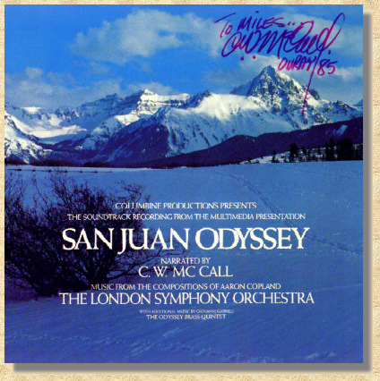
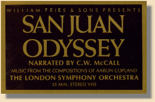

|
 Columbine Productions Presents The Soundtrack Recording From The Multimedia Presentation SAN JUAN ODYSSEY Narrated By C. W. McCall Music From The Compositions Of Aaron Copland The London Symphony Orchestra With Additional Music By Giovanni Gabrieli The Odyssey Brass Quintet |
|
A Multimedia presentation by Columbine Productions
Permanently staged at Wright's Opera Hall, Ouray, Colorado Written and directed by William Fries Panoramic photography by William Fries III Soundtrack production assembly by Sound Recorders Engineered by John Boyd and Don Sears Odyssey Brass Quintet directed by Chip Davis Trumpets Steve Ericson, Everett McCurdy / French Horn Ray Wagner Trombone James Schanilec / Tuba Craig Fuller Silverton Train recording by E. D. Hoaglan Album cover photography by William Fries III San Juan Odyssey is a tribute to one of the most hauntingly beautiful places in the world. It is a gathering of moods and memories to be shared with all those who love and respect these great mountains. The words and music presented here can only attempt to express our emotional attachment to this high country. It remains for your eyes to see and your hearts to feel the true magnificence of the San Juans of Colorado. (r) American Gramaphone Records 1979 All Rights Reserved Manufactured by American Gramaphone Records 206 SO 44th St. Omaha, NE 68131 |
|
The projectors are dark, the speakers are silent ... packed away with the screens and the slides. Gone but never to be forgotten. The San Juan Odyssey was Bill and his family's tribute to the incredible majesty and beauty of the San Juan Mountains.
It all began when Bill and his family visited Ouray for the first time in 1961. The beauty of the mountains captured their hearts, and they began the journey that ultimately produced San Juan Odyssey. The 1967 worlds fair provided the technological impetus for the project. Bill and his son worked in advertising, and were fascinated by the use of computer controlled 35mm projectors to display panoramic, multi-image presentations. Soon, they had incorporated this technology into their advertising work, but it was destined to serve a higher calling. In the early '70s, Bill and his sons, Bill Jr. and Mark assembled the forebear of the Odyssey entitled Our Mountains. It was shown for free for three weeks at the Ouray school, and then went on a tour around the country. A thousand miles to the east, back in Omaha, Bill was unknowingly laying more of the foundations of the Odyssey. The Old Home Bread advertisements, that led to the birth of C. W. McCall. It was the success of C. W. McCall that paved and paid the way for the Odyssey. All the while that C. W. had been truckin' all over this land, Bill and his family had been working on finding a permanent home for Our Mountains, and it's successor, The Odyssey. In 1975 they signed a lease for the second floor theater in Wright's Opera hall. Bill and his sons spent all of 1976 in Ouray, photographing the San Juans in all four seasons. Once the pictures were in the can, the new show needed music and narration. The whole family loved the music of Aaron Copland, and so it was that Appalachian Spring and Billy The Kid were selected to provide the musical backdrop. Bill's creative story-telling talent had been brought to the fore by his writing for the C. W. McCall albums, and the expressive story of San Juan Odyssey was a natural extension of that work. The soundtrack was put together by American Gramaphone and Sound Recorders, the same folks Bill was doing C. W. McCall with. San Juan Odyssey officially opened it's doors in 1977. It featured fifteen computer controlled and synchronized 35mm slide projectors, and five screens connected in a 50 foot wide panorama. Bill wanted to use the equivalent of surround sound for the show, but it didn't exist in 1977, so he built his own system. Bill's sons were continually taking new photos to update the show, so that, although it always told the same story, there were always some new scenes from year to year. Over the twenty year run of the Odyssey, more than 30,000 slides were taken. Then in 1996, at the end of twenty years celebrating the beauty that is Ouray and the San Juans, it was over. The equipment was aging. Repairs were becoming difficult and expensive. New equipment simply cost too much. In addition, Wright's Opera Hall had been sold, and the new owners wanted a substantial increase in the lease price, and also wanted to share the space for live theater. Just as the mines died out because it cost too much to wrest the precious metals from the earth, so the Odyssey could no longer continue. And the human effort required to keep the show going, to keep new photos coming, to keep the equipment working, and to run the show every night during the tourist season, was taking it's toll on the whole family. So it was decided to bring the show to a close, ending what had become a tradition in Ouray. Bill had offers to purchase the show, but declined them. The Odyssey was much more than just a collection of equipment and slides, it was a part of Bill and his family. And it was a part of all of us who came to see it over the years. Whether you saw it once, or came back night after night, and year after year, you could not help but be moved by the experience.  For those who missed it there is still hope. Bill finally gave in to the fans, and made a video version of Odyssey. While it lacks the panoramic impact of the original, it is still a very moving experience. It was available last I knew, from V&S Variety, in Ouray. Their phone number is 970-325-4469. Give 'em a call and order yours today.And Bill has said that he may take The Odyssey out of his attic near the turn of the millenium, for a few shows at the community center. I hope it happens. I hope I'll be there to see it... just one more time. |

This Web page is hosted by: Mark L. Evans
Written and maintained by: Miles A. Lumbard
Send Comments to:Miles A. Lumbard